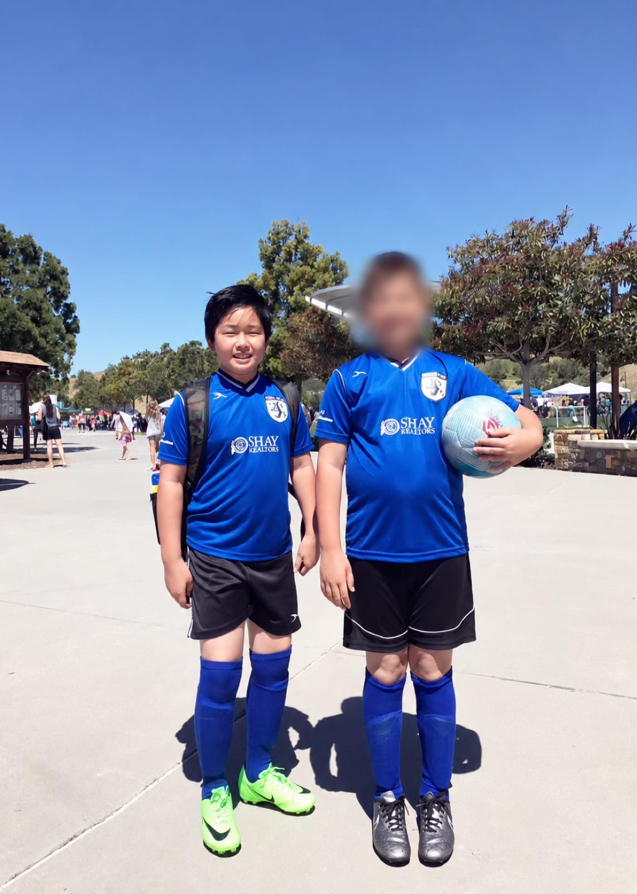

01
Where It Started
In elementary school, I struggled with my weight, being obese and having early stages of high blood pressure. I felt uncomfortable in my own skin, and I felt ashamed of who I was. This occurred at an early age, and I never knew anything about the importance of mental health, nor was it something that was emphasized in my family.
